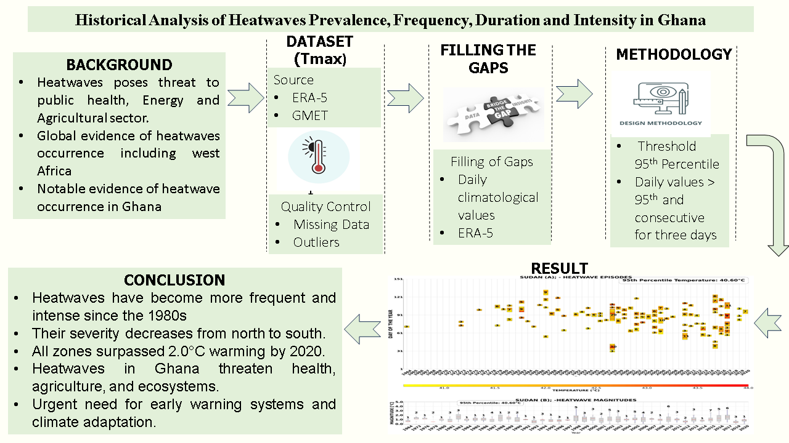
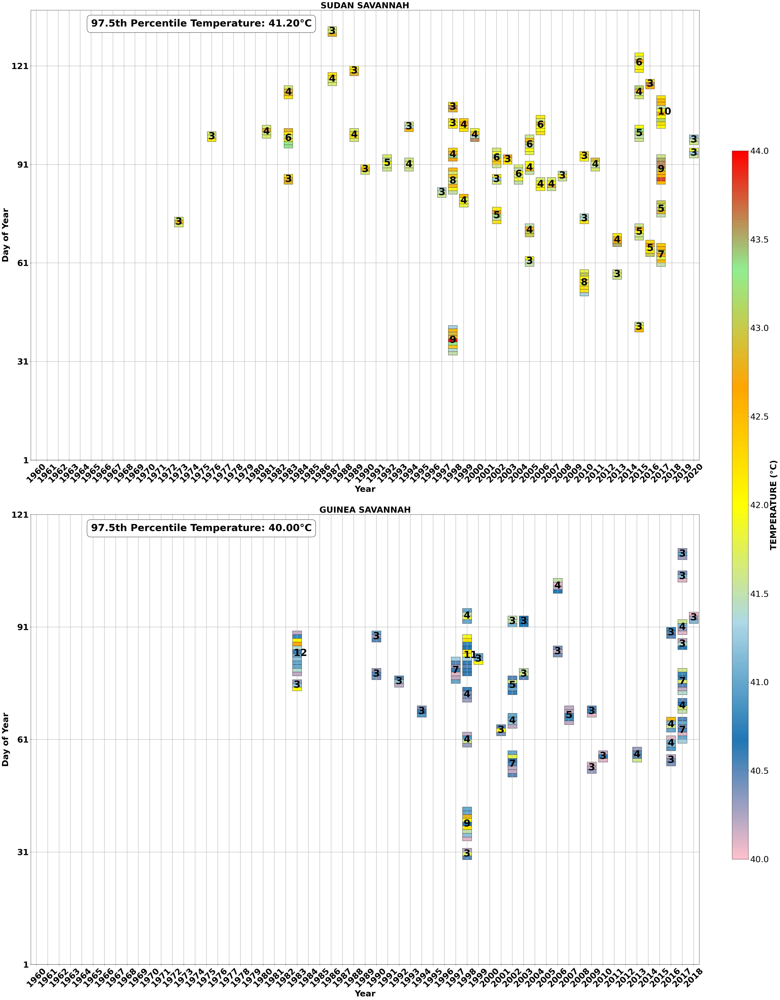
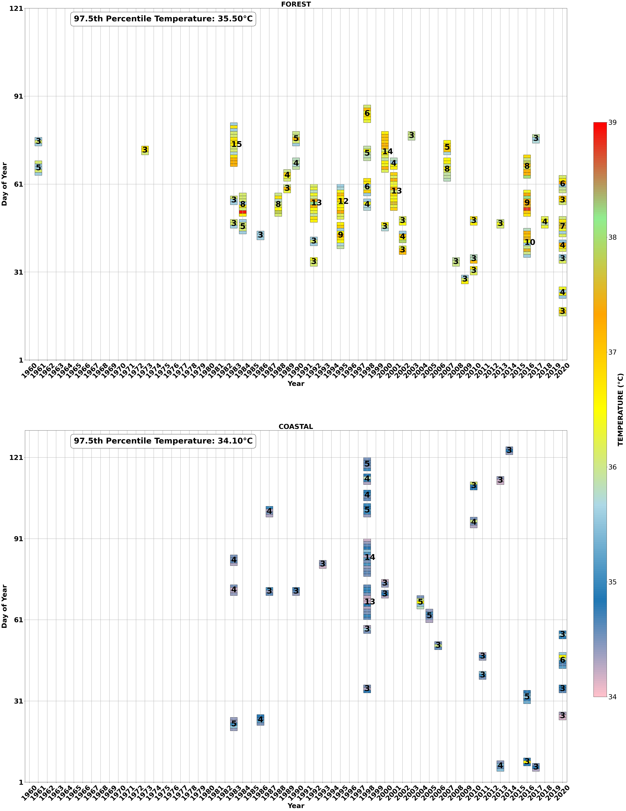
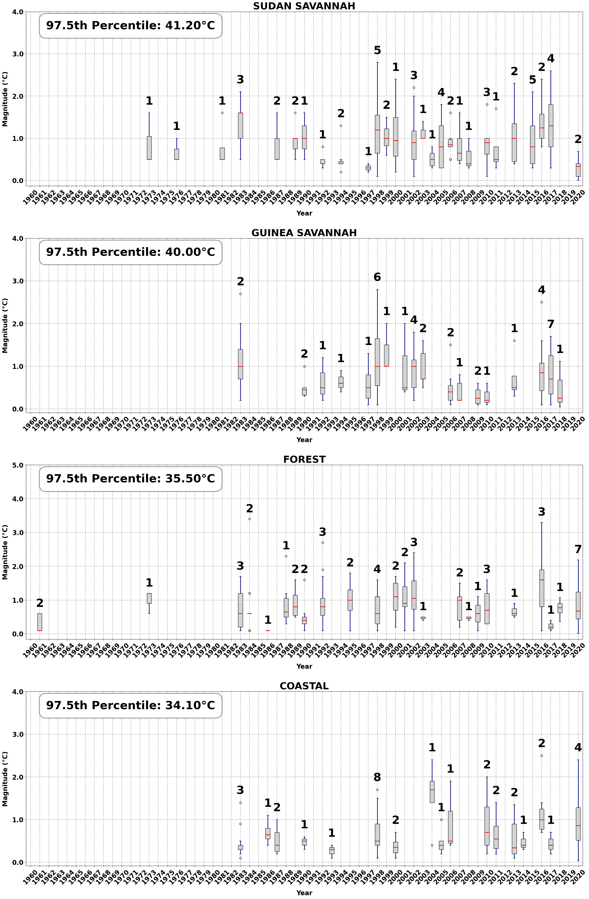

Analyze the historical occurrence, frequency, duration, and intensity of heatwaves across Ghana's climatic zones.
Daily maximum temperature data from the Ghana Meteorological Agency spanning 1961 to 2020.
Temperature-based percentile approach identifying periods of three or more consecutive days above the 97.5th percentile for each zone.
SSRN preprint; the file explicitly states that the research paper has not been peer reviewed.

Graphical abstract extracted from the SSRN preprint: Historical Analysis of Heatwaves Prevalence, Frequency, Duration and Intensity in Ghana.
Research Context
The manuscript states that heatwaves, driven by climate change, pose growing risks to public health, agriculture, and society. It notes that in Ghana, high temperatures are often perceived as isolated events rather than heatwaves, making historical prevalence, intensity, and frequency comparatively scarce in the research record.
The study analyzes daily maximum temperature data from 1961 to 2020 and defines heatwaves as three or more consecutive days where daily maximum temperatures exceed the 97.5th percentile of historical records for each climatic zone.
Results and Significance
- The SSRN preprint reports that heatwaves in Ghana became more frequent, longer, and more intense from 1961 to 2020, with the most significant increases occurring from 1980 onward.
- The manuscript reports a north-to-south decrease in heatwave intensity across climatic zones.
- The Sudan Savannah is identified in the preprint as experiencing the most extreme heatwaves, followed by the Guinea Savannah, Forest, and Coastal zones.
- The project is framed around support for early warning systems, climate adaptation, and risk management.

Heatwave diagnostic figure extracted from the Ghana heatwave SSRN preprint.

Ghana heatwave analysis figure extracted from the SSRN preprint.

Heatwave results figure extracted from the SSRN preprint.

Ghana geographic context map from local applied climatology materials.